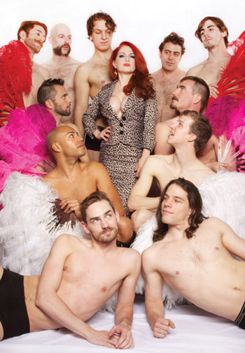

past performance |
|||
|
Jo Weldon's "Fierce: The History of Leopard Print" showtimes & tickets:October 3 @ 7:30PM The leopard is an apex predator: powerful, adaptable, and challenging to domesticate. Leopard print is an apex fashion statement: powerful, controversial, and difficult to ignore. As changes in the production and distribution of fashion have occurred, as well as changes in the agency of women and the restrictions of class and economy, people have had the ability to express themselves through clothing in ways unprecedented in history. A pattern evolved in nature to help a predator blend in has become a phenomenon developed in culture to make a woman stand out. Come to this lecture to learn about leopard print as a signifier in popular culture, and its meanings as sifted through the lenses of entertainment, social change, and feminism. |
 | ||
|
Since Jo debuted this lecture at The Wild Project, it has been covered in The Financial Times London, the New York Times, and more, as well as being performed internationally in Canada and Europe. As a lifelong fan of leopard print, she has spent the past two years examining its history and implications, as well as its controversial nature. As a burlesque performer and the author of The Burlesque Handbook (HarperCollins/ItBooks), she has spent a lot of time thinking about costume and skin, as well as the what it means to be a person on display. Jo and her New York School of Burlesque instructors have produced numbers for, among others, Christina Aguilera, Gossip Girl, What Not to Wear, Love and Hip Hop, Real Housewives of NY, and appeared on dozens of news shows, including CBS Sunday Morning and the Today Show. Weldon, who worked full-time as a stripper from the time she left high school in 1980, joined the world of theatrical burlesque in New York City in 1997. She blogs and publishes on the topics of stripping, sex worker rights, burlesque history and burlesque -- and leopard print. Read about a previous presentation of the show in the New York Times. Group Photo Credit: Maggie Saniewska |
|||
upcoming performances |
|||
 |
|||
| EVQ Film Festival 2018 August 20-25 |
|||
performance archives |
|||
| 2018 | 2017 | 2016 | 2015 |
| 2014 | 2013 | 2012 | 2011 |
| 2010 | 2009 | 2008 | 2007 |